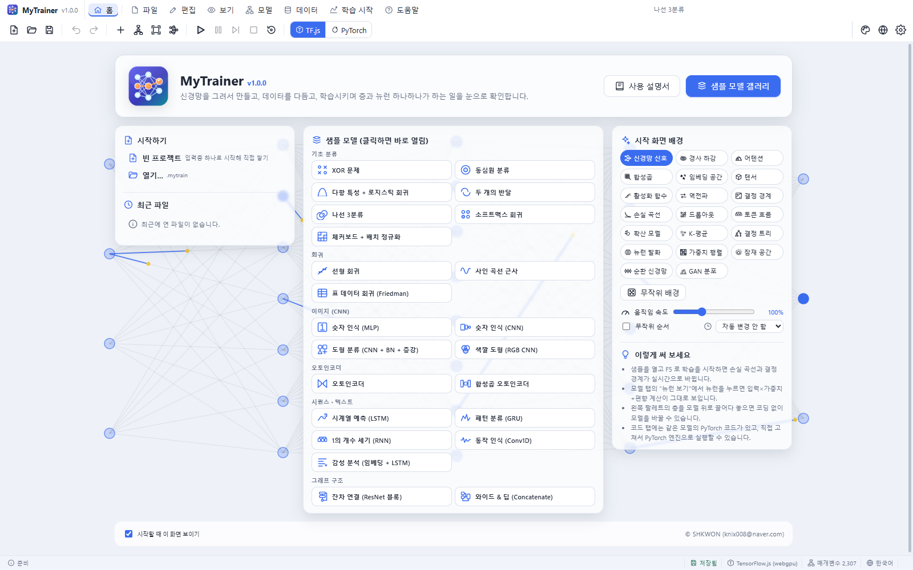
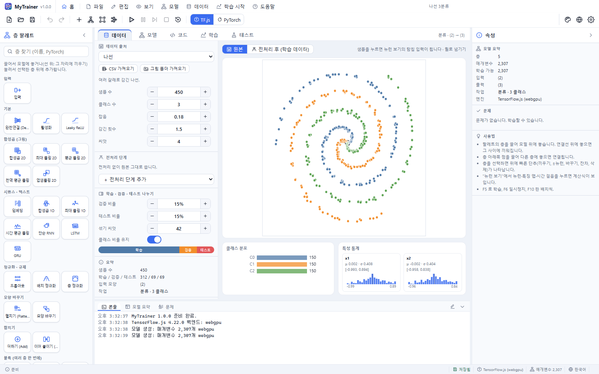
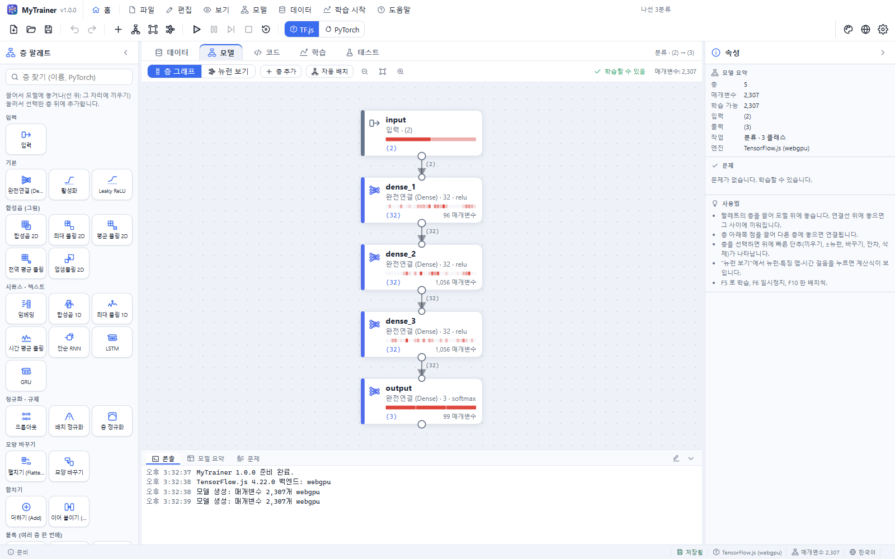
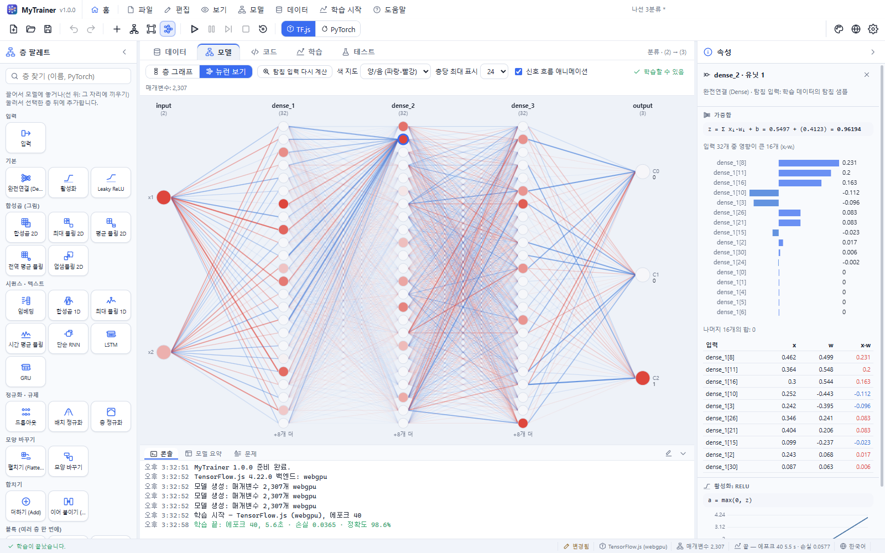
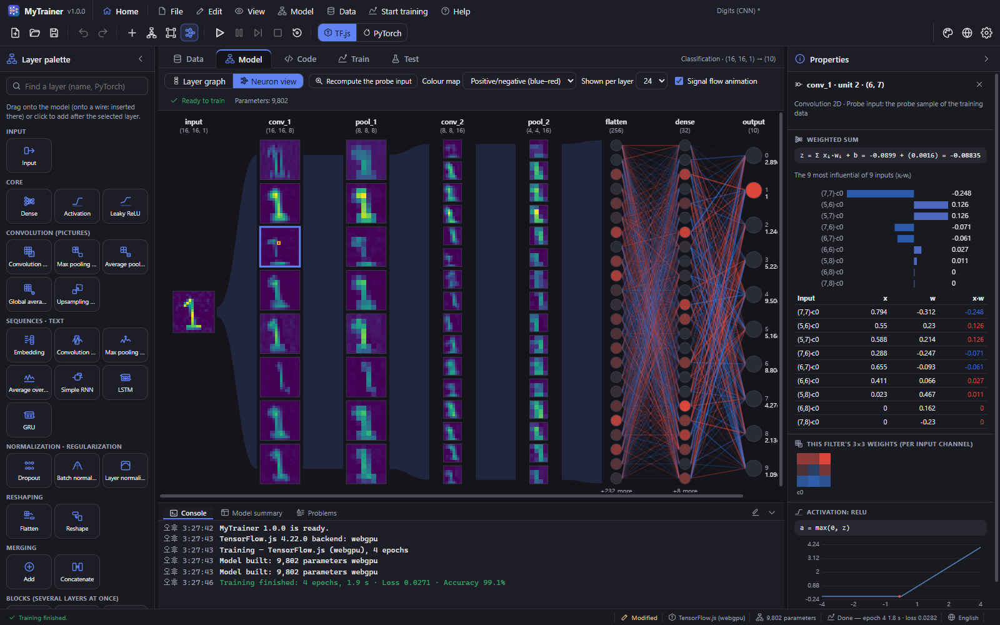
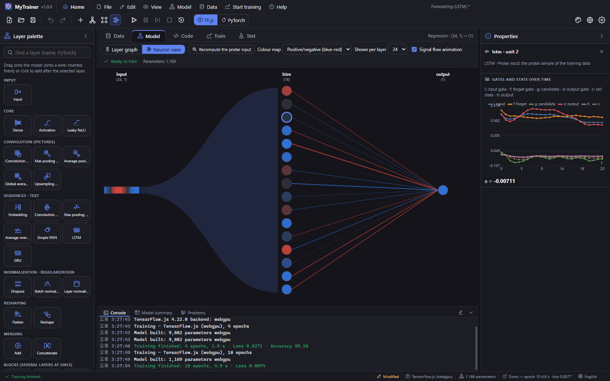
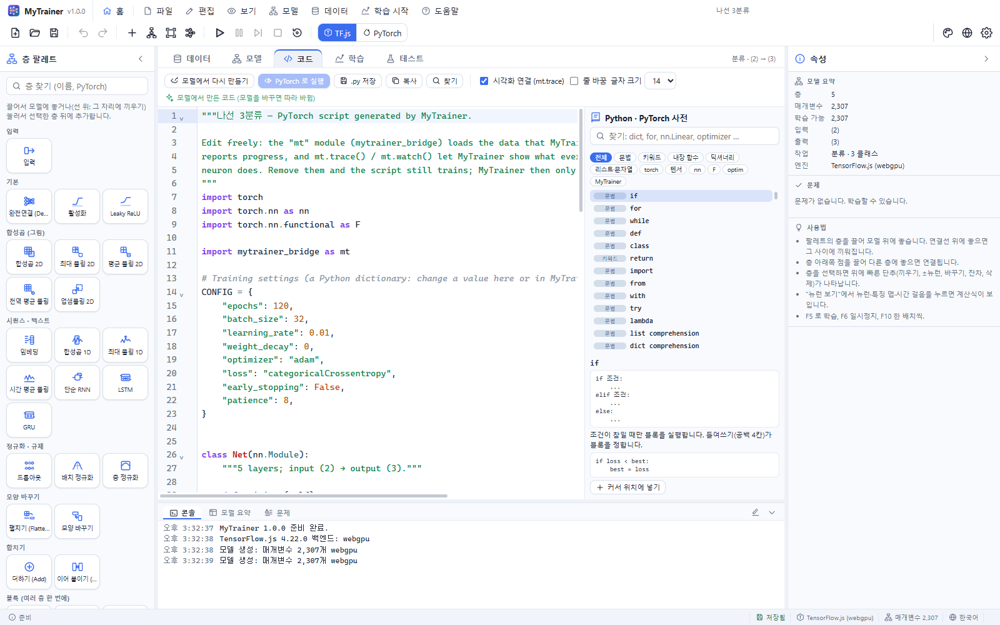
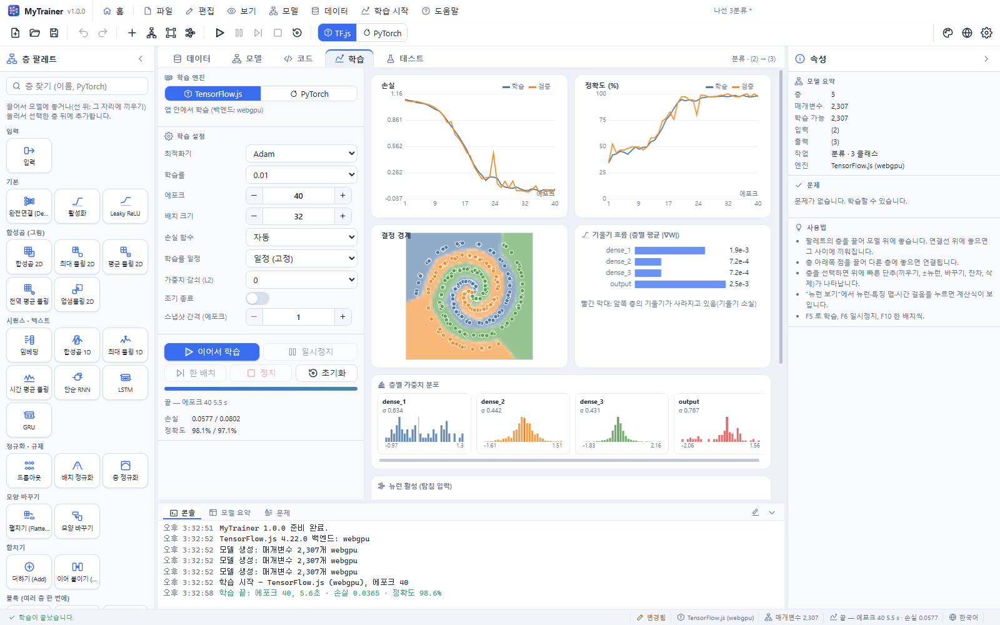
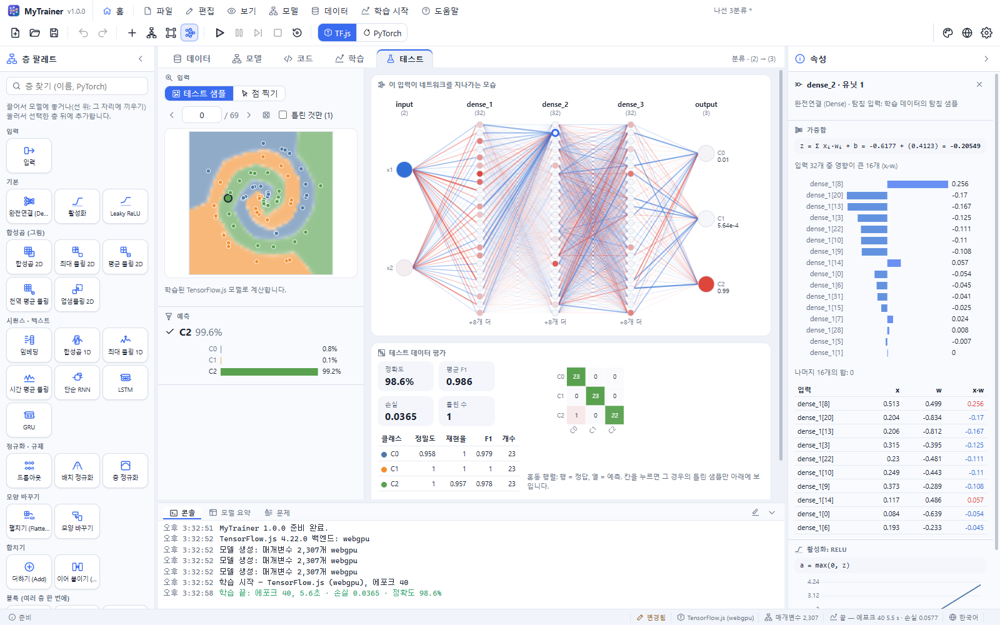
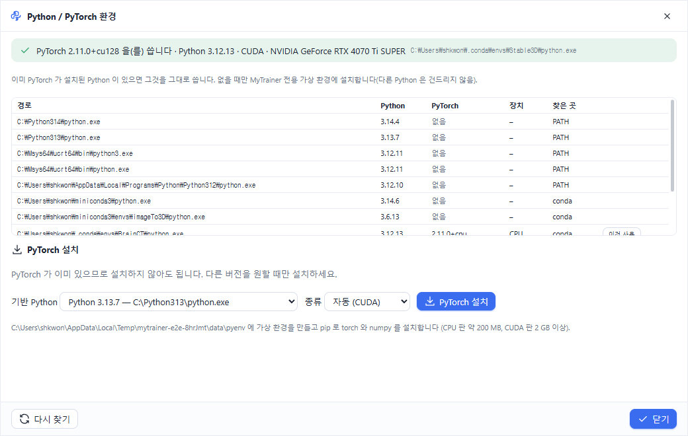

MyTrainer 사용 설명서
MyTrainer 는 신경망을 그려서 만들고, 데이터를 다듬고, 학습시키면서 층과 뉴런 하나하나가 하는 일을 눈으로 확인하는 프로그램입니다. 학습이 끝난 모델은 그림을 그리거나 값을 넣어 바로 시험해 볼 수 있고, 같은 모델의 PyTorch 코드를 보고 고쳐서 PyTorch 로 실행할 수도 있습니다.
- 웹 브라우저, Windows, macOS, Linux 에서 같은 화면으로 동작합니다(Tauri 2).
- 학습 엔진은 두 가지입니다: 앱 안에서 바로 학습하는 TensorFlow.js(WebGPU · WebGL · CPU), 그리고 이 컴퓨터의 Python 으로 실행하는 PyTorch(데스크톱 앱).
- 23개의 샘플 모델(MLP, CNN, 오토인코더, RNN · LSTM · GRU, Conv1D, 임베딩, 잔차 연결, 와이드 & 딥)이 들어 있고, 모두 오프라인에서 만들어지는 데이터를 씁니다.

빠른 시작
- 시작 화면에서 샘플 모델(예: "나선 3분류")을 누릅니다.
- F5(또는 툴바의 ▶)를 누르면 학습이 시작되고, 학습 탭에 손실·정확도 곡선과 결정 경계가 실시간으로 그려집니다.
- 모델 탭에서 뉴런 보기를 누르고 뉴런 하나를 클릭하면, 오른쪽 속성 패널에 그 뉴런의 계산(입력 × 가중치 + 편향 → 활성화)이 숫자 그대로 보입니다.
- 테스트 탭에서 테스트 샘플을 넘겨 보거나, 숫자 샘플이라면 직접 그려서 예측을 확인합니다.
화면 구성
| 위치 | 내용 |
|---|---|
| 메뉴 막대 | 홈 · 파일 · 편집 · 보기 · 모델 · 데이터 · 학습 · 도움말. 창 제목 막대 역할도 합니다(끌어서 창 이동, 두 번 눌러 최대화). |
| 툴바 | 새로 만들기·열기·저장, 실행 취소/다시 실행, 층 추가·자동 배치·맞추기·뉴런 보기, 학습 시작·일시정지·한 배치·정지·초기화, 엔진 선택(TF.js / PyTorch), 테마·언어·설정 |
| 왼쪽: 층 팔레트 | 모든 층과 블록. 끌어다 모델에 놓거나 눌러서 추가합니다. 아래에 프로젝트 이름과 설명. |
| 가운데: 작업 탭 | 데이터 · 모델 · 코드 · 학습 · 테스트 (Ctrl+1 … Ctrl+5) |
| 오른쪽: 속성 | 선택한 층의 설정, 선택한 뉴런의 계산 과정, 아무것도 선택하지 않으면 모델 요약과 문제 목록 |
| 아래: 패널 | 콘솔(엔진 메시지, Python 출력), 모델 요약 표, 문제 목록 |
| 상태 표시줄 | 알림, 저장 여부, 엔진, 매개변수 수, 학습 상태, 언어 |
데이터 탭

데이터 출처
- 내장 데이터 18종 — 2차원 점(XOR, 동심원, 반달, 나선, 점 무리, 체커보드), 함수·표(직선, 사인, Friedman), 그림(숫자 0–9, 도형, 색깔 도형), 시퀀스(사인파 예측, 패턴, 1 세기, 동작 센서), 텍스트(짧은 문장 감성). 샘플 수·잡음·씨앗 같은 값을 바꾸면 바로 다시 만들어집니다.
- CSV 가져오기 — 쉼표·세미콜론·탭을 자동으로 알아냅니다. 정답 열을 고르면 글자이거나 값의 종류가 적을 때 분류, 아니면 회귀가 됩니다. 글자 특성 열은 원-핫 열로, 빈 숫자는 열의 평균으로 채웁니다.
samples/student-pass.csv(합격 여부, 분류)와samples/house-prices.csv(집값, 회귀)로 시험해 보세요. - 그림 폴더 가져오기 — 하위 폴더 이름이 클래스입니다(
cats/,dogs/…). 그림은 28×28 회색조로 줄여 프로젝트에 저장됩니다.
샘플을 누르면 그 샘플이 탐침 입력이 됩니다. 뉴런 보기와 학습 탭의 뉴런 그림은 탐침 입력이 네트워크를 지나가는 모습입니다. 그림 위에서 마우스 휠로 다음 샘플들을 넘겨 봅니다.
전처리 단계
| 단계 | 하는 일 |
|---|---|
| 표준화 | 학습 데이터의 평균·표준편차로 (x − μ) / σ |
| 최소-최대 정규화 | 학습 데이터의 최소~최대를 지정한 범위로 |
| 다항 특성 | x₁², x₁x₂ … 곱 특성 추가 (뉴런 하나로 원형 경계를 만드는 샘플 참고) |
| 범위 자르기 | 이상치를 범위 안으로 |
| 잡음 증강 · 좌우 뒤집기 · 이동 증강 | 변형한 복사본을 학습 데이터에만 추가 |
| 밝기 반전 | 1 − x |
통계(평균, 범위)는 학습 데이터에서만 구해 검증·테스트 데이터에 똑같이 적용합니다. 단계는 켜고 끄거나 순서를 바꿀 수 있습니다. 원본 / 전처리 후 단추로 차이를 확인하세요.
나누기
검증·테스트 비율, 섞기 씨앗, 클래스 비율 유지(층화 추출)를 정합니다. 아래 막대가 세 부분의 크기를 보여 줍니다.
모델 탭 — 코딩 없이 모델 만들기

모델은 층 카드와 연결선으로 된 그래프입니다. 카드에는 층 이름, 종류와 주요 설정, 출력 모양, 매개변수 수, 그리고 학습 중에는 활성값 띠가 보입니다.
| 하고 싶은 일 | 방법 |
|---|---|
| 층 추가 | 팔레트의 층을 캔버스로 끌어 놓기 · 층을 선택하고 팔레트에서 누르기(선택한 층 뒤에 끼워짐) · 빈 곳을 두 번 클릭 |
| 두 층 사이에 끼우기 | 팔레트의 층을 연결선 위에 놓기 · 연결선을 오른쪽 클릭 → "이 연결선에 층 끼우기" |
| 연결 | 층 아래쪽 점(출력 포트)을 끌어 다른 층에 놓기 |
| 연결 끊기 | 연결선을 누르고 Delete · 오른쪽 클릭 → 연결선 삭제 |
| 빠른 편집 | 층을 선택하면 위에 단추가 나타납니다: 위에 끼우기 · 아래에 추가 · 뉴런/필터 −/+ · 다른 층으로 바꾸기 · 복제 · 잔차 연결 · 삭제 |
| 여러 층 한 번에 | 블록(Dense+BN+ReLU+드롭아웃, Conv+BN+ReLU+풀링, 분류 머리, LSTM 2층 …) |
| 설정 바꾸기 | 오른쪽 속성 패널: 이름(코드의 변수 이름), 종류, 뉴런 수·활성화·커널 크기 … |
| 정리 | 자동 배치(Ctrl+L), 화면에 맞추기(Ctrl+0), 확대/축소(Ctrl+휠, Ctrl+= / Ctrl+-) |
| 선택 | 클릭, Shift+클릭, Shift+끌기(사각형), Ctrl+A |
모양은 데이터에서 출력까지 자동으로 계산되며, 맞지 않으면 카드에 빨간 표시와 설명이 붙습니다(예: "그림 (높이, 너비, 채널) 입력이 필요합니다", "출력 모양 (3) 이(가) 데이터가 원하는 (4) 와(과) 다릅니다"). 모델 위쪽의 상태와 아래 문제 탭에서 모든 문제를 볼 수 있고, 문제를 누르면 그 층으로 이동합니다. 데이터를 바꾸면 출력층의 뉴런 수와 활성화가 작업에 맞게 자동으로 바뀝니다.
뉴런 보기

네트워크를 왼쪽(입력)에서 오른쪽(출력)으로 뉴런 단위로 그립니다.
- 벡터 층은 뉴런 원(색 = 활성값), 그림 층은 채널별 특징 맵, 시퀀스 층은 유닛별 시간 띠로 보입니다.
- 완전연결 층 사이의 선은 가중치입니다: 파랑 = 음수, 빨강 = 양수, 굵고 진할수록 큼.
- 새 스냅샷이 오면 신호가 입력에서 출력으로 흘러가는 애니메이션이 나옵니다.
- 뉴런 · 특징 맵의 픽셀 · 시간 걸음을 클릭하면 속성 패널에 그 값이 어떻게 계산됐는지 나옵니다.
| 층 | 속성 패널에 보이는 것 |
|---|---|
| 완전연결 | z = Σ xᵢ·wᵢ + b, 영향이 큰 입력 순서의 기여 막대와 표, 활성화 함수 그래프 위의 z, 결과 a |
| 합성곱 | 선택한 위치의 수용 영역 × 필터 가중치(채널별 필터 그림), 합, 활성화 |
| 풀링 | 창 안의 값들과 max / 평균 |
| 배치 정규화 | (x − μ) / √(σ² + ε) · γ + β |
| LSTM · GRU · RNN | 시간에 따른 게이트(입력·망각·후보·출력 / 갱신·리셋·후보)와 은닉·셀 상태 그래프 |
| 임베딩 | 단어 번호와 그 행(벡터) |
| 더하기 · 이어 붙이기 | 각 입력에서 온 값 |
계산 결과 옆의 ✓ 엔진 값은 엔진(TensorFlow.js 또는 PyTorch)이 실제로 계산한 값과 이 식으로 다시 계산한 값이 같다는 표시입니다.


코드 탭 — PyTorch 코드

모델과 학습 설정이 그대로 담긴 완전한 PyTorch 스크립트가 만들어집니다.
CONFIG딕셔너리(에포크, 배치 크기, 학습률 …),class Net(nn.Module)의__init__(층)과forward(계산), 손실 함수, 평가 함수, 학습 반복문이 들어 있습니다.- 그림·시퀀스의 축 순서(앱은 채널이 마지막, PyTorch 는 채널이 먼저)는
permute/transpose와 주석으로 보입니다. mytrainer_bridge(mt) 모듈이 앱과 통신합니다:mt.load_data()(전처리된 데이터),mt.batches()(일시정지·정지 처리),mt.trace(이름, 텐서)(층 출력 기록),mt.watch(model, loss_fn)(가중치·기울기),mt.report_epoch(),mt.finish(),mt.serve()(학습 후 테스트 요청에 응답). 시각화 연결을 끄면mt.trace줄 없이 만듭니다.- 모델을 바꾸면 코드도 따라 바뀝니다. 코드를 직접 고치면 "직접 고친 코드"가 되어 그대로 보존되고, PyTorch 엔진은 그 코드를 실행합니다. 모델에서 다시 만들기로 생성된 코드로 돌아갑니다.
- 편집기: Python 문법 강조, 자동 완성(Ctrl+Space), 마우스를 올리면 설명, 문법 오류 표시, 찾기(Ctrl+F), 줄 바꿈·글자 크기.
- Python · PyTorch 사전 (오른쪽): 문법(if · for · def · class · with · try · 컴프리헨션 · f-문자열 · 슬라이싱), 키워드, 내장 함수, 딕셔너리 메서드(keys · values · items · get · update · pop · setdefault …), 리스트·문자열, torch · 텐서 · nn · F · optim, MyTrainer 함수를 한국어/영어 설명과 예제로 찾아보고 커서 위치에 넣기로 넣습니다.
- .py 저장으로 스크립트를 파일로 저장합니다.
학습 탭

| 항목 | 설명 |
|---|---|
| 엔진 | TensorFlow.js(앱 안, 백엔드 WebGPU → WebGL → CPU 순으로 자동 선택) 또는 PyTorch(데스크톱) |
| 최적화기 | Adam, SGD, SGD+모멘텀, RMSprop, Adagrad, Adadelta, Adamax |
| 학습률 · 일정 | 고정, 단계적 감소, 지수 감소, 코사인 |
| 손실 | 자동(분류: 교차 엔트로피, 회귀·복원: MSE), MAE, Huber |
| 가중치 감쇠 · 조기 종료 · 참을성 | 과적합 줄이기 |
| 스냅샷 간격 | 몇 에포크마다 모든 층의 활성값·가중치·기울기를 가져올지 |
학습 시작(F5) · 일시정지/계속(F6) · 한 배치(F10) · 정지(Shift+F5) · 초기화. TensorFlow.js 는 정지 후 이어서 학습할 수 있습니다.
차트: 손실(학습/검증, 지난 실행은 점선), 정확도 또는 학습률, 결정 경계(2차원 점) · 학습된 곡선(1차원 함수) · 원본/복원(오토인코더) · 출력 확률, 기울기 흐름(층별 평균 |∇W| — 앞쪽 층이 빨갛게 작으면 기울기 소실), 층별 가중치 분포, 탐침 입력의 뉴런 활성.
테스트 탭

- 테스트 샘플: 이전/다음/무작위, 평가 후에는 틀린 것만 넘겨 보기.
- 직접 입력: 그림 데이터는 검은 칸에 그리기, 2차원 점은 평면을 클릭, 텍스트는 문장 입력(아는 단어를 눌러 넣기), 표·함수 데이터는 원래 단위의 값 입력(전처리는 자동 적용).
- 입력이 네트워크를 지나가는 모습이 뉴런 보기로 크게 나오고, 예측(클래스 확률 · 값 · 복원 그림)이 보입니다.
- 평가(학습이 끝나면 자동): 정확도, 평균 F1, 손실, 클래스별 정밀도·재현율·F1, 혼동 행렬(칸을 누르면 그 경우의 틀린 샘플만), 틀린 샘플 그림(누르면 입력으로). 회귀는 MAE · RMSE · R², 예측-정답 그림과 오차 분포.
PyTorch 엔진은 학습이 끝난 뒤에도 실행을 살려 두고(mt.serve) 테스트 요청에 답합니다. PyTorch 종료로 끝냅니다.
PyTorch 엔진과 Python 환경

학습 › Python / PyTorch 환경… 창에서 이 컴퓨터의 Python 들을 볼 수 있습니다.
- 이미 설치된 것을 먼저 씁니다.
MYTRAINER_PYTHON환경 변수, MyTrainer 전용 환경, 활성화된 가상 환경, conda 환경(활성·anaconda·miniconda·miniforge 의 envs), PATH, Windowspy실행기, 일반 설치 폴더, pyenv 를 모두 찾아 각 Python 에 PyTorch 가 있는지 확인합니다. PyTorch 가 있는 것이 여럿이면 CUDA(NVIDIA GPU) → Apple MPS → MyTrainer 전용 → 최신 PyTorch 순서로 고르고, 목록에서 이것 사용으로 바꿀 수 있습니다. - 없을 때만 설치합니다. 기반 Python(64비트 CPython 3.9 이상, 3.10–3.13 우선)과 종류(자동: NVIDIA GPU 가 있으면 CUDA, 없으면 CPU / CPU 전용 / CUDA / PyPI 기본)를 고르고 PyTorch 설치를 누르면, 앱 데이터 폴더에 MyTrainer 전용 가상 환경을 만들고 pip 로 torch 와 numpy 를 설치합니다. 다른 Python 은 건드리지 않습니다. 설치 과정은 창 아래에 그대로 보입니다.
- Python 이 아예 없으면 Windows 에서는 Python 3.12 설치(winget) 단추로 설치할 수 있습니다. macOS · Linux 에서는 python.org · Homebrew · 패키지 관리자로 설치한 뒤 다시 찾기를 누르세요.
PyTorch 로 학습하면 실행 폴더(앱 데이터 폴더의 runs/)에 스크립트(train.py), 브리지 모듈, 전처리된 데이터(meta.json, x_train.f32 …)가 만들어집니다. 스크립트의 print 출력과 오류(트레이스백)는 콘솔에 나옵니다.
샘플 모델
| 묶음 | 샘플 |
|---|---|
| 기초 분류 | XOR, 동심원, 다항 특성 + 로지스틱 회귀, 두 개의 반달, 나선 3분류, 소프트맥스 회귀, 체커보드 + 배치 정규화 |
| 회귀 | 선형 회귀, 사인 곡선 근사, 표 데이터 회귀(Friedman) |
| 이미지 (CNN) | 숫자 인식(MLP), 숫자 인식(CNN), 도형 분류(CNN + BN + 증강), 색깔 도형(RGB CNN) |
| 오토인코더 | 오토인코더, 합성곱 오토인코더 |
| 시퀀스 · 텍스트 | 시계열 예측(LSTM), 패턴 분류(GRU), 1의 개수 세기(RNN), 동작 인식(Conv1D), 감성 분석(임베딩 + LSTM) |
| 그래프 구조 | 잔차 연결(ResNet 블록), 와이드 & 딥(Concatenate) |
파일 › 샘플 모델…(갤러리) 또는 시작 화면에서 엽니다. samples/ 폴더에는 몇 가지 샘플의 .mytrain 파일과 CSV 예제가 있습니다.
파일
- 프로젝트(.mytrain): 데이터 출처와 전처리·나누기, 모델 그래프, 학습 설정, 엔진, PyTorch 코드(직접 고친 경우), 지난 실행 기록, 그리고 설정에 따라 학습된 가중치(TensorFlow.js)를 담은 JSON 파일입니다. CSV·그림 폴더 데이터도 파일 안에 들어가므로 다른 컴퓨터에서 그대로 열립니다.
- 데스크톱에서는
.mytrain파일을 두 번 누르면 MyTrainer 로 열립니다. - 저장하지 않은 작업은 자동으로 기억되어 시작 화면의 이어서 작업으로 다시 열 수 있습니다.
시작 화면
샘플 갤러리, 최근 파일, 그리고 인공지능을 주제로 한 움직이는 배경 20가지(신경망 신호, 경사 하강, 어텐션, 합성곱, 임베딩 공간, 텐서, 활성화 함수, 역전파, 결정 경계, 손실 곡선, 드롭아웃, 토큰 흐름, 확산 모델, K-평균, 결정 트리, 뉴런 발화, 가중치 행렬, 잠재 공간, 순환 신경망, GAN 분포)이 있습니다. 배경을 고르거나 무작위로 바꾸고, 속도와 자동 변경 간격을 정할 수 있습니다. 메뉴 막대의 홈으로 언제든 돌아옵니다.
설정
편집 › 설정…: 언어(한국어/English), 시작 화면, 끝낼 때 저장 확인, 가중치 저장 / 테마(라이트 20 · 다크 20 · 시스템) / 글꼴·크기·굵기 / 시각화(색 지도, 층당 표시할 뉴런 수, 신호 애니메이션) / 코드(글자 크기, 줄 바꿈, 시각화 연결) / PyTorch(Python 경로, 설치 종류).
단축키
| 키 | 동작 |
|---|---|
| Ctrl+N · Ctrl+O · Ctrl+S · Ctrl+Shift+S | 새로 만들기 · 열기 · 저장 · 다른 이름으로 저장 |
| Ctrl+Z · Ctrl+Y | 실행 취소 · 다시 실행 |
| Ctrl+1 … Ctrl+5 | 데이터 · 모델 · 코드 · 학습 · 테스트 탭 |
| Delete · Ctrl+D · Ctrl+A | 삭제 · 복제 · 모두 선택 (모델 탭) |
| Ctrl+L · Ctrl+0 · Ctrl+E | 자동 배치 · 화면에 맞추기 · 뉴런 보기 |
| 방향키 (Shift: 크게) | 선택한 층 이동 |
| F5 · F6 · F10 · Shift+F5 | 학습 시작 · 일시정지/계속 · 한 배치 · 정지 |
| F1 | 사용 설명서 |
| Ctrl+F · Ctrl+Space | 코드에서 찾기 · 자동 완성 |
문제 해결
- "모델에 오류가 있습니다" — 모델 탭 위쪽 상태나 아래 문제 탭을 보세요. 가장 흔한 것은 출력층의 뉴런 수가 클래스 수와 다른 경우, 그림 층(Conv2D) 앞에 그림이 아닌 입력이 오는 경우입니다.
- PyTorch 엔진을 고를 수 없음 — 웹판에서는 PyTorch 엔진을 쓸 수 없습니다. 데스크톱 앱을 쓰세요.
- PyTorch 가 없다고 나옴 — Python / PyTorch 환경 창에서 다시 찾기, 또는 설정의 Python 경로에 PyTorch 가 있는 Python 을 직접 적으세요.
- Python 오류로 끝남 — 콘솔의 트레이스백을 보세요. 직접 고친 코드라면 모델에서 다시 만들기로 되돌릴 수 있습니다.
- 학습이 느림 — 상태 표시줄의 엔진 백엔드를 확인하세요(cpu 면 느립니다). 배치 크기를 키우거나 스냅샷 간격을 늘리면 빨라집니다.